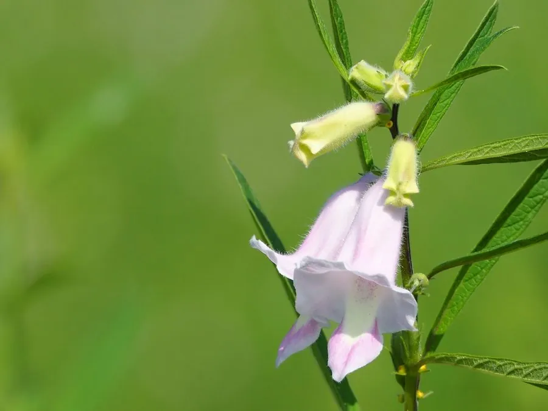

农作物与经济植物 · 植物界
芝麻 Sesamum indicum

芝麻的种子富含油脂，可榨取芝麻油，也可制芝麻酱、糕点和糖果，是重要的油料作物，栽培历史逾五千年。
- 分类
- 门被子植物门纲双子叶植物纲目唇形目科芝麻科属芝麻属
- 栖息环境
- 温带与热带平原，喜温暖、光照充足，不耐霜冻
- 地理分布
- 原产非洲或印度，现主产于中国、印度、缅甸、苏丹等地
- 保护级别
- 暂无评估（栽培作物）
物种志
芝麻是一年生草本，株高 0.6–1.5 m，茎直立，四棱形，有分枝，全株有短柔毛。叶片互生或对生，卵形或披针形。花白色或淡紫色，筒状唇形，单生或簇生于叶腋。蒴果四棱形，成熟时开裂，内含许多扁椭圆形种子，颜色有白、黑、黄、褐等。
芝麻原产非洲或印度一带，栽培历史已有 5000 多年，后传入中国，古代称“胡麻”，是重要的油料作物。它喜温暖、光照充足，不耐霜冻，适宜在排水良好的壤土中种植。芝麻种子含油约 45%–55%，可榨取芝麻油（香油），香味浓郁，是烹饪与调味的上品；种子可制芝麻酱、芝麻糖、糕点和芝麻糊。芝麻富含维生素 E 和钙，黑芝麻在中医里被认为有补肝肾、润肠燥之效。中国河南、湖北、安徽是主产区。
形态与习性
- 株高0.6–1.5 m，茎四棱形
- 花白色或淡紫色，筒状唇形
- 蒴果四棱形，成熟后开裂
- 种子含油约 45%–55%
- 用途榨香油、芝麻酱、糕点
- 营养富含维生素 E 与钙
趣味知识
- 芝麻种子含油可达 45%–55%，榨出的芝麻油香气浓郁。
- 芝麻古代称“胡麻”，是经丝绸之路传入中国的重要油料作物。
- 黑芝麻在中医里被认为能补肝肾、润肠燥，常被做成芝麻糊。